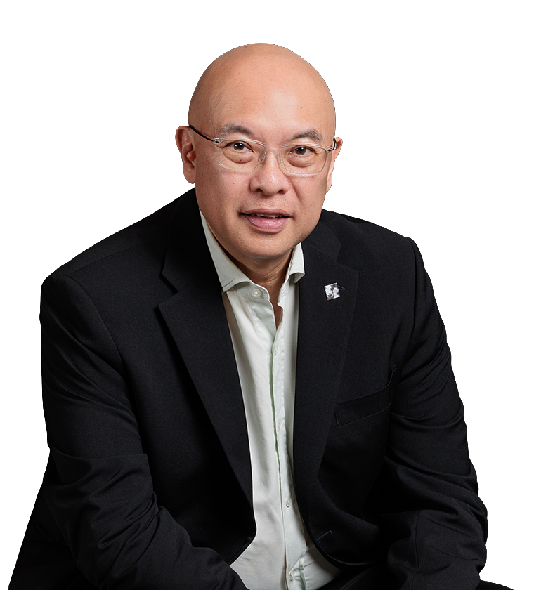

Yeow Meng Chee
Provost, SUTD
A leading combinatorialist whose work turns deep questions about designs and set systems into elegant codes for communication and data storage.

About
A combinatorialist of rare breadth, Professor Yeow Meng Chee has carried the theory of designs into the codes that guard and preserve the world’s data, and has built institutions with the same care.
A Putnam honourable mention as a Waterloo undergraduate, he completed his PhD there in 1996 under Anna Lubiw and Charles J. Colbourn. His thesis on Turán-type problems in group testing, coding theory and cryptography won recognition for Outstanding Achievement in Graduate Studies. After postdoctoral work at Waterloo and IBM Zurich, he helped build Singapore’s digital foundations, deploying Netrust, Asia’s first public certification authority, and co-founding SingCERT.
At NTU he led the Division of Mathematical Sciences, the School of Physical and Mathematical Sciences and the College of Science. At NUS he was Vice President (Innovation & Enterprise) and Vice Provost. Since April 2025 he has been Provost and Chief Academic & Innovation Officer of SUTD, and Cheng Tsang Man Chair Professor. He holds the Public Administration Medal (Silver, 2018), is a Fellow of the Institute of Combinatorics and its Applications, and has served as Associate Editor of the IEEE Transactions on Information Theory and on the board of JCTA. Homepage
Research highlights
- Extremal set systems at work. Turán-type problems, packings and cover-free families that give sharp answers in group testing, coding and cryptography.
- Cooling codes. With Etzion, Kiah and Vardy, a new family of codes that keeps on-chip interconnects cool by resting the hottest wires (IEEE Trans. Inf. Theory, 2018).
- Optimal codes for DNA storage. Linear-time, order-optimal encoders correcting a single indel or edit over the DNA alphabet (IEEE Trans. Inf. Theory, 2021).
- Explicit Baranyai partitions. Explicit constructions for a classical theorem whose proof had named none (J. Combin. Des., 2021).
- Codes for emerging memories. Racetrack, domain-wall and endurance-limited memories, and codes against tandem duplications.
Students and alumni
Doctoral alumni
- Đậu Sơn Hoàng (Son Hoang Dau)On index coding with side informationSenior Lecturer, RMIT University
- Han Mao KiahReliable communications over power lines through coded modulation schemesAssistant Professor, NTU
- Vũ Văn KhuCoding techniques for flash memoriesAssistant Professor, VinUniversity
- Nguyễn Tuấn ThànhCodes correcting bursts of deletions/insertions and tandem duplicationsResearcher, SUTD
- Liang Feng ZhangA study of private information retrieval and related primitivesAssociate Professor, ShanghaiTech University
- Liyasi WuLocal correction of codes of high rate
Postdoctoral fellows
- Xiande ZhangProfessor and Dean, USTC
- Hengjia WeiProfessor, Xi’an Jiaotong University
- Vitaly SkachekAssociate Professor, University of Tartu
- Tạ Duy HoàngAssistant Professor, HUST
- Bùi Văn ThạchUniversity of Science, VNU-HCM
He has also supervised many theses in data engineering and AI at NUS. Full lab record
With Tuvi Etzion
The two honourees have written together on thermal-management codes, de Bruijn sequences and recovery sets, often with Han Mao Kiah, Alexander Vardy and Vũ Văn Khu.
- 2024On de Bruijn covering sequences and arraysISIT 2024, with Hoang Ta and Van Khu Vu
- 2024Recovery sets of subspaces from a simplex codewith Han Mao Kiah and Hui Zhang
- 2024Repairing with zero skip costarXiv, with Hoang Ta and Van Khu Vu
- 2023Thermal-aware channel capacityISIT 2023, with Han Mao Kiah and Alexander Vardy
- 2018Cooling codes: thermal-management coding for high-performance interconnectsIEEE Transactions on Information Theory, with Han Mao Kiah and Alexander Vardy